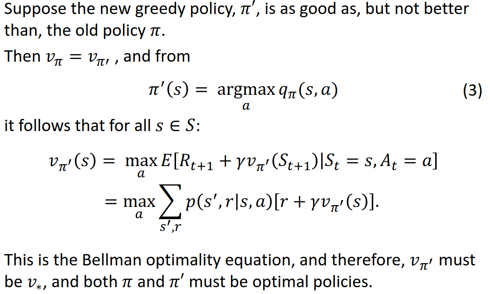

Table of Contents
1. 1) Welcome
These are my personal notes on reinforcement learning which is mostly based on the udemy course
https://www.udemy.com/course/artificial-intelligence-reinforcement-learning-in-python/
Link to code: https://github.com/lazyprogrammer/machine_learning_examples
1.1. RL Approaches:
- Dynamic programming (very restrictive and hence more robust)
- Monte carlo (lesser restrictive)
- TDL includes Q-learning (least restrictive)
2. 2) Return of the Multi-Armed Bandit (explore vs exploit)
Major application of bandits is to COMPARE items/elements (online advertising, websites, …)
The multi-armed bandit problem models an agent that simultaneously attempts to acquire new knowledge (called "exploration") and optimize their decisions based on existing knowledge (called "exploitation"). The agent attempts to balance these competing tasks in order to maximize their total value over the period of time considered.
2.1. Epsilon-Greedy
Modifying the 'greedy' strategy (ML/argmax in connection to two bandits). Thus, controlling \(p\) lets us explore (to collect data about each bandit) instead og exploit. Epsilon greedy basically ensures that we don't get stuck in some 'bad maxmimum likelood estimate'.

SB pseudo code is given as:
Here \(Q(a)\) is the expected reward untill now and \(N(a)\) the number of times we chose action \(a\).
Given two bandits with 90% and 80% winrate respectively, the expected reward is:

So no matter how small epsilon is, we can never expect to go beyond 90% winrate. To remedy this we can use one of the decaying functions:
2.2. Optimistic Initial Values
Overestimate the true mean (instead of setting it to zero) in the greedy algorithm. Note here, it is not the epsilon-greedy algorithm.
This will cause the algorithm to explore more in the beginning because it will (falsely) believe that the bandits have high expected rewards. Setting the initial value (hyperparameter) essential controls the ratio of exploration.
2.3. UCB1 (Upper Confidence Bound)
There are several inequalities that state something about the sample mean. In UCB1 we use Hoefding's inequality (the proof of this inequality is actually a lot of fun!):
From this identity the UCB1 update can be derived as
The "2" is a hyperparameter. Here \(n_j\) is the number of times bandit \(j\) has been chosen and \(N\) is the total number of times we played any bandit. And just to be clear, \(X_{n_j}\) is the reward (zero or one) when pulling the \(j\)'th bandit (hence \(\bar X_{n_j}\) is the expected reward) which is a number between zero and one (notice, it is not the cummulative expected reward, but the expected reward in each pull).
Ignoring bandit \(j\) for a long time, means that the square root part will start increasing, and therefore we start slowly to explore \(j\) again (but only slowly).
2.4. Thompson Sampling
Thompson sampling uses Bayesian conjugate priors (beta is conjugate prior for bernoulli) to update the belief of the probabilities. This is very well explained in the image below. Notice, that we don't rely on any 'collected' data, but we update as information is coming in.
We just need to pick some initial values of \(\alpha\) and \(\beta\). We can even encode prior knowledge into this prior using \(\alpha\) and \(\beta\). Common choices are \(\alpha=1\) and \(\beta=1\) which leaves us with a uniform distribution on \([0; 1]\)
Now instead of using the upper bound in UCB we draw a sample (which is between zero and one) from the posterior, which is called Thompson sampling and update (alpha and bete) the posterior distribution. We choose to pull the bandit for which we drew the highest number. The optimal bandit will become skinny in the end.
2.5. Thompson Sampling wit Real-Valued (Gaussian) Rewards
Just use the same algorithm, but update according to a Gaussian posterior. Instead of choosing the bandit with the largest probability of success, we choose the bandit which yields the greates expected reward.
2.6. Non-stationary Rewards
The above examples relied on i.i.d assumption. Instead of updating the mean as before, we can update using exponential weighted moving average (EWMA)
"The older the data is, the less it should contribute to the overall mean". The above equation can be written as an infinite power series with the term \((1-\alpha)^N\) (the exponential series).
3. MDPs (model-based approach)

The MDP is governed by the following probability distribution:


3.0.1. Reward function (discounted):

Discounting intuition: The immediate reward is more worth than the reward on a long distant future. It is a hyperparameter that is usually close to one (0.99, 0.98, …). Without discounting, the cumulative future rewards could be infinite, and how should one choose between policies that both yield inifinte returns.
The reward function can be written recursively which is useful for the later theory and algorithms.
3.0.2. Policy functions
3.0.3. State-value function
The reward function is dependend on the policy, since a policy obviously can yield very different returns. And surely it is also dependent on the state we are currently in (think of a simple grid world example where we start just next to the goal. Then the reward can be high. But starting way back, and accumulating negative ones can give much worse accumulated reward). But the reward can in fact change (as just discussed) during the process/game, so how can we enven optimize for this seemingly stochastic number -> value functions. We want to maximize the expected cumulative reward. The value function is given by

So the value function describes the expected sum of future rewards given that we are in state \(s\) and we follow the policy \(\pi\) from here on.
ALMOST ALL OF THE EFFORT IN RL IS DEVOTED TO SOLVE FOR THE VALUE FUNCTION!!!
3.0.4. Bellman Equation
In order to calculate the value function, we only need to look one step ahead which is important! Decreases the statspace to search over drastically in each step (instead of an entire tree of states). BS furthermore use the law of total expectation to write the Bellman equation as. Remember that \(\pi(a|s) = p(a|s)\) and use total law of expectation to put in \(A_t\) in order to exploit the definitions above.

Assuming all the probabilites are known (they are just numbers), then it should be apparent, that this is just a system of linear equations. Assume there are \(|S| = k\) states, then we have \(k\) equations in \(k\) unknowns. This is ofcourse non-feasible to solve in realworld applications, where the statespace is extremely large.
3.0.5. Action-value function
As opposed to the state-value function, which can be used to test a given policy given a particular state, the action-value function can be used to test how good a particular action is in termes of the expected commulative future rewards given a certain state:

\(V(s)\) is useful for evaluating a policy; given a policy, what is the return we can expect.
\(Q(s, a)\) is useful for control; I'm in state \(s\), what is the best action I can take. That is, compare \(Q(s, a_1)\) and \(Q(s, a_2)\) etc.
Hence we can talk about Q-table which are 2-dim arrays with values of Q given a state and an action. For a given state we can then compare \(Q(s, a_1)\) and \(Q(s, a_2)\).
The relations are given by
3.0.6. Bellman Examples
It is important to note, that the value at the final step (when we arrive at at target), is zero, since the expected future rewards is exactly zero because we are finished. Generally, in toy examples we can work 'backwards' and plug-in. Without loops this is easy, but with loops, we need to set up a system of linear equations and solve.
Simple examples can be made by constructing simple DAGS with terminal nodes (nodes that have no parents), and assigning weight probabilities and rewards on each node. In general, note that the reward is dependent on the previous state and the action taken. This implies, that transitioning to a state could lead to different rewards based on what the action was to get there!
3.0.7. Optimal Policy and Value Function
The policy \(\pi\) is better that \(\pi'\) if its expected return is greater than that of \(\pi'\) for all statesl; \(\pi \geq \pi'\) if and only if \(v_{\pi}(s) \geq v_{\pi'}(s)\) for all \(s\).
The optimal state-value function, policy and action-value function is defined as
3.0.8. Theorem: Bellman optimality equation
The optimal value function is unique, but the optimal policy is not! Note the property that V* = max Q* below, which can be seen from the definitions above.

Finding v* and q* is just a means to and end where we want an optimal policy! The optimal policy can be found as
But normally we dont know the probability involved; imagine huge statespace and images. So also very hard to estimate. But in dynamic programming we use this relation.
For the action value function we have:
So we can go about taking max in the a-row in the Q-table. We use this relation in monte carlo and temporal difference learning.
For all RL algos we learn, we'll follow the following pattern:
- (Task 1) Evaluation/prediction problem (V) - Evaluate a given policy (i.e, what is the value of V given pi*)
- (Task 2) Control problem (Q) - Find the best policy
4. Dynamic Programming (DP)
DP refers to the methods used for solving RLs when we have complete knowledge.
4.1. Recap
At each time step, the agent recieves a state \(S_t\) and a reward \(R_t\), while the environment then recieves an action from the agent \(A_t\). The objective is to "program the agent" in order to maxmize the expected future return.
The policy, \(\pi(a\mid s)\) (can be deterministic) sort of governs the agent while the joint pmf \(p(s', r \mid s, a)\) governs the environment. And therefore, we need to find "the best pi".
4.2. Iterative Policy Evaluation
Here we solve Task 1. In this section, we simply assume that we know \(\pi(a\mid s)\) and \(p(s', r \mid s, a)\) so we can apply Bellmans equation directly. It is not reasonable to know \(p(s', r \mid s, a)\) but we do it anyway.
Since everything is known, we can simply solve this problem using a system of linear equations. But this is not scalable when the statespace is large.
Also, DP can't handle the situation when \(p\) is unkown, but it will lead to methods that can! The iterative policy evaluation algorithm is given below where \(v \leftarrow V(s)\) means the "old value" og the value function for that given state. And the max delta is taken over all states. Also, even simple, remember that we must loop over \(a, s'\) and \(r\)!
It should also be noted, that the reward is deterministic for many practical problems and therefore we can alleviate to sum over the rewards and we have \(p(s', r \mid s, a)\) = \(p(s'\mid s, a)\) and \(r \equiv r(s')\) (don't need to depend on the action, since the action led us to state \(s'\)!). So \(r(s)\) could simply be a, deterministic, mapping from \(S\) to \(R\).
4.3. Policy Improvement
Now, given a (deterministic) policy, how can we improve it iteratively. Suppose that vi know the value function \(v_\pi\) from policy iteration. For a given state \(s\) we want to know whether it makes sense to, deterministically, change \(\pi(s)\) to an action \(a\). We already know how good it is to follow \(\pi\) from state \(s\) which is just \(v_\pi(s)\) and therefore we can compare it. So what is the value if we instead take action \(a\) when in state \(s\), and thereafter follow \(\pi\).
So assume we are given
- some \(\pi(s)\)
- we have found \(V_{\pi}(s)\) and \(Q_{\pi}(s,a)\)
- we take an action, \(a\), NOT prescribed by the policy for state \(a\neq s\)
- but hereafter we follow \(\pi(s)\) again
This is EXACTLY what \(Q_{\pi}(s,a)\) is. Hence, if \[ Q_{\pi}(s,a) > V_{\pi}(s) \] then, the return for that particular episode is better than if we had just followd \(\pi\) the whole time.
Pictorally this can be show as:
So, for each state, the best action is found by:
So what if we change the action \(\pi(s)\) to \(a^{\ast} = \pi'(s)\) and make a new policy \(\pi\)?
POLICY IMPOROVEMENT THEOREM:

This theorem extends to stochastic polies using the natural definition


The above gives us a criterion for when to stop the policy iteration algorithm (introduced below). When the policy no longer improves, we say that it is stable. Also, it says that we should take the argmax in each state (the Bellman optimality equation), i.e.
4.4. Policy Iteration
The policy iteration algorithm is composed of the policy evaluation together with the policy improvement algorithms so sequentially update the policy.

The policy iteration pseudo algorithm from Barto and Sutton is given as below. Note that the value function can be initialized with zeroes (or random except for the terminal states which has to be zero).

Note that policy iteration yields a deterministic policy since we take argmaxes in each step! Since optimal policies are not unique, we could end up getting stuck in the loop. This is not an issue in value iteration where we just compute a SINGLE optimal policy (and dont care about all the other optimal policies).
4.5. Value Iteration
Since the optimal policy can be derived from the Bellman optimality equation
(i.e, from an optimal value function) we can avoid some unncessary loops compared to policy iteration.

4.6. Comparison of Policy Iteration and Value Iteration
5. Monte Carlo (model-free approach)
5.1. Monte Carlo First Visit (Evaluation)
Note here e.g. for model-based approaches, one can design a policy. For example, one can design/learn a policy that takes actions when trading. So the actions could be "buy", "sell" and "flat". Given a certain state, we can estimate this policy.
In this section, the transition probabilities are unknown, and the agent must learn to navigate the environment to learn these. MC methods can only be used in problems with terminal nodes, i.e. problems that terminate, since we need to compute the expected future reward.
In first visit monte carlo, the idea is to play a bunch of episodes and collect samples of returns, \(G\), and then average these. More specifically, we estimate the value function by sample means.
The algorithm can move into an infinite cycle, and we can just terminate the algo. after a predefined number of steps.
5.2. Monte Carlo Exploring Starts (Control)
The MCES, is used for the control problem and leverages the ideas from FVMC. The idea is to, on an episodic basis, approximate both \(Q\) and \(\pi\). Notice how we cant compute \(\pi\) as per the definition, since we do not know the transition probabilities. However, we do know that \(\pi\) is the arg-max of the state value function \(Q\). And we find \(Q\) by an ordinary average over states and actions.
Notice how it is in-efficient to calculate the mean (for \(Q\)) when the number of samples is large. It can be updated as \[ Q(s,a) = Q(s, a) + \frac{1}{N(s,a)}\bigg[G - Q(s,a)\bigg] \].
One crucial assumption in the MCES algorithm is the "exploring starts" which is not always realistic. Imagine a self-driving car or a video game. You cant start in any state in the video game (otherwise just choose the best one :). The reason for randomly selecting a state and action in MCES, is to be sure that we eventually visit all state-action pairs so get more diverse episodes. Ultimately, we want all actions to be chosen infinitelty often, because then the convergence results (optimality) holds true.
5.3. Epsilon-Greedy Monte Carlo (Control)
In EGMC we use a soft policy, which means that \(\pi(a|s) > 0\) for all \(s\) and \(a\), but gradually shifted towards a deterministic policy. Specifically, the EPGM uses the $ε$-greedy policy where
6. On-Policy vs Off-Policy
- Definition:
- On-Policy: On-policy methods learn the value or policy function from the data generated by the current policy itself. In other words, they use the data collected by the agent while it follows its current policy to update that same policy.
- Off-Policy: Off-policy methods, on the other hand, learn the value or policy function from data collected by following a different, potentially older, or even random policy. They can update a policy while using data collected by a different policy.
- Data Utilization:
- On-Policy: On-policy methods can only use the data they collect while they are following the current policy. This means they can't make use of past experiences collected under a different policy.
- Off-Policy: Off-policy methods can use data collected by any policy, making them more data-efficient. This is particularly advantageous in situations where exploration of the environment is costly or risky.
- Sample Efficiency:
- On-Policy: On-policy methods are often less sample-efficient compared to off-policy methods because they cannot reuse past data effectively. They need to continually gather new data to update the current policy.
- Off-Policy: Off-policy methods tend to be more sample-efficient since they can reuse previously collected data. This can lead to faster learning in situations where collecting data is resource-intensive or time-consuming.
- Exploration vs. Exploitation:
- On-Policy: On-policy methods may have a slight advantage in exploration because they focus on improving the current policy. However, they can get stuck in local optima if exploration is not balanced.
- Off-Policy: Off-policy methods often handle exploration and exploitation more flexibly. They can explore using a stochastic policy while still learning from data collected under a deterministic or less exploratory policy.
- Examples:
- On-Policy: Methods like REINFORCE and A3C (Asynchronous Advantage Actor-Critic) are on-policy algorithms.
- Off-Policy: Q-learning, DDPG (Deep Deterministic Policy Gradients), and TD3 (Twin Delayed Deep Deterministic Policy Gradients) are examples of off-policy algorithms.
In summary, the choice between on-policy and off-policy methods depends on the specific requirements and constraints of the RL problem you are trying to solve. On-policy methods can be simpler to implement and might be preferred when exploration is a key concern, while off-policy methods are often more sample-efficient and can leverage historical data effectively, making them suitable for a wider range of scenarios.
7. RL and Data
In reinforcement learning (RL), you can use information from a dataset with variables X and Y (forming the states) in several ways, depending on your specific problem and the RL algorithm you're using. Here are some common approaches:
- State Representation: The dataset can serve as a source for defining the state representation for your RL problem. You can use the variables X and Y directly as state features or preprocess them to create a more informative state representation. This representation should capture all relevant information about the environment that the RL agent needs to make decisions.
- Initialization: You can use the dataset to initialize the RL agent's policy or value function. For example, you can train a supervised learning model (e.g., a neural network) using the dataset to predict actions or state values. Then, you can use this pre-trained model as the starting point for your RL algorithm.
- Reward Design: The dataset can help you design a suitable reward function for your RL problem. By analyzing the data, you can identify patterns or conditions that indicate whether an action is good or bad. This information can guide the creation of a reward function that provides meaningful feedback to the RL agent.
- Behavior Cloning: If you have access to a dataset of expert demonstrations (X, Y, actions), you can use behavior cloning to train an RL policy. You train a model (e.g., a neural network) to predict actions from states (X and Y) based on the expert data. The RL agent can then fine-tune this policy using reinforcement learning techniques.
- Imitation Learning: Similar to behavior cloning, you can use the dataset for imitation learning, where the RL agent learns from expert demonstrations. Imitation learning methods aim to generalize from the dataset to handle situations not explicitly seen in the data.
- Experience Replay: If your RL algorithm supports experience replay (e.g., Deep Q-Networks), you can store the dataset in a replay buffer and sample experiences from it during training. This helps stabilize training by breaking the temporal correlation between consecutive experiences and can make learning more data-efficient.
- Reward Shaping: You can analyze the dataset to identify subgoals or intermediate rewards that can be used for reward shaping. Reward shaping can help guide the RL agent toward desired behaviors and accelerate learning.
- Policy Evaluation: If you have a dataset of state-action pairs and their associated rewards (X, Y, actions, rewards), you can use it for policy evaluation. This involves estimating the expected return of a policy based on the dataset, which can be useful for comparing different policies or assessing the quality of a learned policy.
The specific approach you choose will depend on the nature of your RL problem and the available dataset. Keep in mind that using a dataset effectively in RL often requires careful preprocessing, data analysis, and consideration of potential challenges such as distribution shift between the dataset and the RL environment. Additionally, it's essential to choose an RL algorithm that supports your chosen approach (e.g., behavior cloning, imitation learning, experience replay) and implement it accordingly.